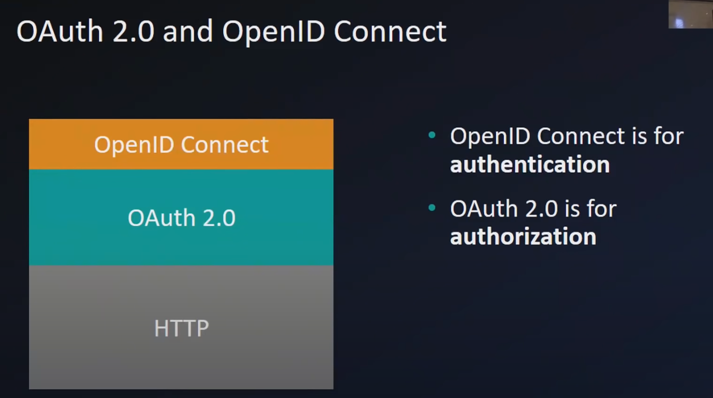
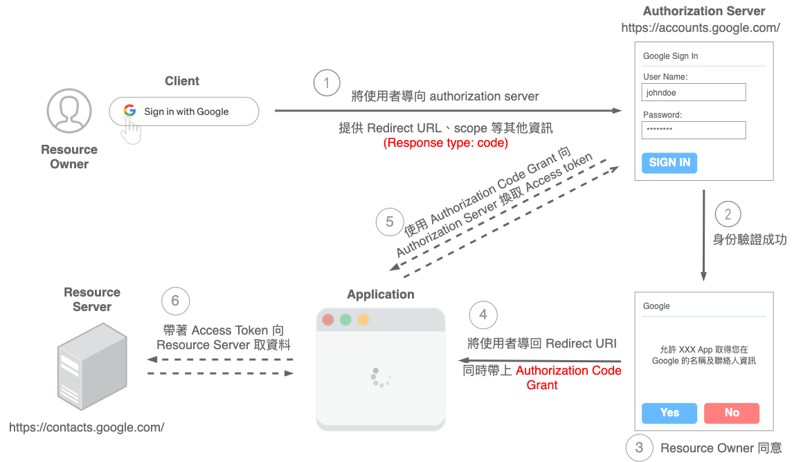
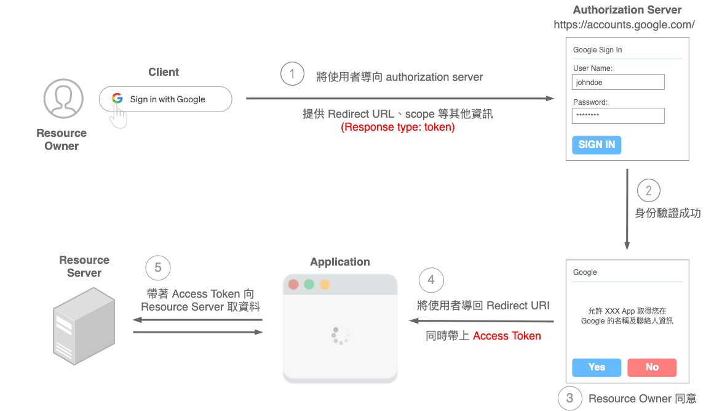
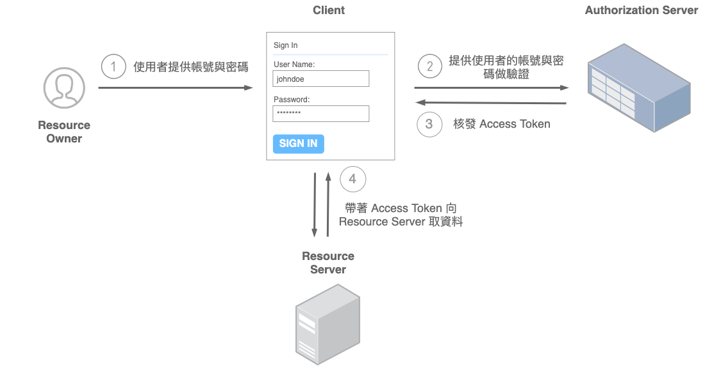
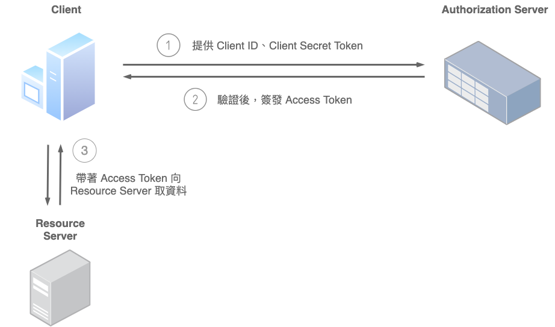
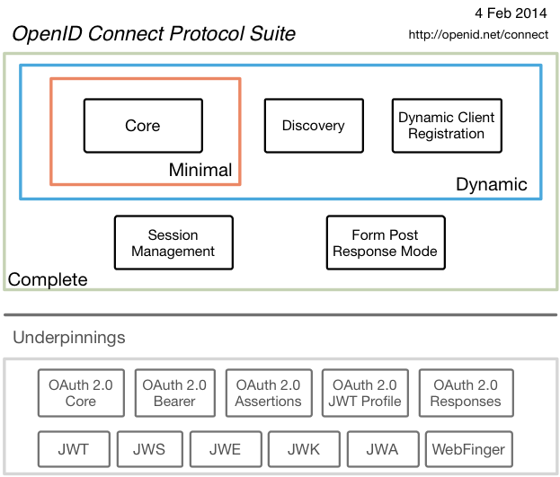
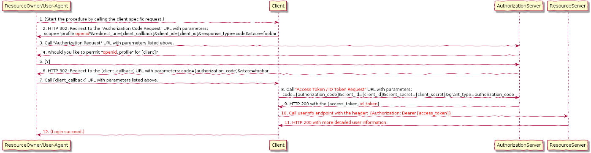

Keycloak 提供了幾種 protocols，OpenID Connect (OIDC)、OAuth 2.0 and SAML。雖然 OIDC & OAuth 2.0 已存在一段時間，但因為沒有使用實做上的情境，所以都沒有花時間去瞭解背後的運作原理，一樣利用週末的時間來做一下功課
根據閱讀多篇文件瞭解，OIDC 是基於 OAuth 2.0 發展出來的，看起來得先看 OAuth 2.0 是什麼

OAuth 2.0
OAuth 2.0 基本上處理 Authorization 的部分，用來控制授權誰能存取資源，有四個基本元素
- authorization server: 用來發 access token 的 server
- resource owner: 有權限能存取資料的使用者
- client: 將 access token 傳給系統服務的應用程式
- resource server: 接受 access token 並驗證其合法性
其他名詞
- authorization grant: 授權範圍
- access token: 由
authorization server發出，會在發請求時附加在進去給resource server - redirect URI: 登入後要轉回的路徑
授權流程
-
Authorization Code

這算是比較常見的模式，登入畫面會由
authorization server提供，透過redirect URI的方式帶著authorization code回到client端供後面使用這流程也是 Keycloak JavaScript adapter 預設行為
-
Implicit

使用場景是 SPA 或是純前端系統，與
Authorization Code模式的差異在於access token的取得方式，這模式比較不安全，「透過 URI Fragment 來傳 Access Token ，所以可能會外洩」
-
Resource Owner Password Credentials

這比較像是過往的 server side 網頁服務
-
Client Credentials

適用場景: machine-to-machine (M2M) applications
(圖片出自: [筆記] 認識 OAuth 2.0：一次了解各角色、各類型流程的差異)
OIDC
瞭解基本 OAuth 2.0 後，那 OIDC 又是什麼，一開始提到 OIDC 是基於 OAuth 2.0 發展出來的
先提一下 OAuth 2.0 只有做 Authorization 的部分，並沒有涵蓋Authentication 的部分，這兩者的差異是什麼呢?
- Authorization: 授權使用範圍
- Authentication: 使用者認證，使用者是否存在及使用者是誰，都算在認證的範圍內

(圖片來源: https://openid.net/connect/)
整個的流程大概會是這樣

一些會出現在 OIDC 的名詞
- End User: Human participant.
- Replying Party (RP): OAuth 2.0 Client application requiring End-User Authentication and Claims from an OpenID Provider.
- OpenID Provider (OP): OAuth 2.0 Authorization Server that is capable of Authenticating the End-User and providing Claims to a Relying Party about the Authentication event and the End-User.
- ID Token: JSON Web Token (JWT) [JWT] that contains Claims about the Authentication event. It MAY contain other Claims.
- UserInfo Endpoint: Protected Resource that, when presented with an Access Token by the Client, returns authorized information about the End-User represented by the corresponding Authorization Grant. The UserInfo Endpoint URL MUST use the
httpsscheme and MAY contain port, path, and query parameter components.
常見 flow
- Authorization Code
- Implicit: with Id_token
- Hybrid: Authorization Code+ Implicit